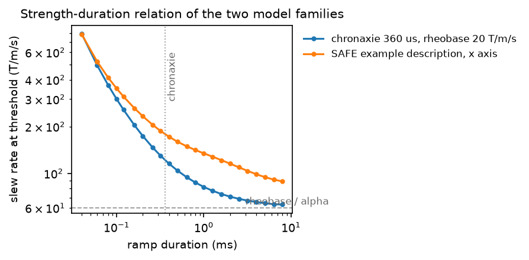

Peripheral nerve stimulation#
A changing gradient field induces an electric field in the body, and above a
threshold that field depolarizes peripheral nerves. The sensation reported is a
tapping or twitching at the extremities. In a sequence with rapid gradient
switching this constraint is commonly reached at a lower slew rate than the
amplifier’s own limit, so it, rather than the hardware, determines the
shortest usable echo spacing.
check_pns() estimates the response of a stated nerve
model to the sequence’s slew and compares it with that model’s threshold.
Strength-duration relation#
Nerve excitation is not a function of the instantaneous rate of change alone. A membrane integrates the stimulus over a time constant, so a brief, intense change and a longer, gentler one can be equally effective. The classical description is the strength–duration relation: for a rectangular stimulus of duration \(\tau\), the amplitude required for excitation is
where \(S_{\mathrm{rh}}\) is the rheobase, the amplitude a stimulus of unbounded duration needs, and \(c\) the chronaxie, the duration at which twice the rheobase is required (Irnich and Schmitt, Magn Reson Med 1995, doi:10.1002/mrm.1910330418; Reilly, Med Biol Eng Comput 1989, doi:10.1007/BF02441480).
Both parameters belong to the gradient coil and the subject, not to the sequence: the coil’s geometry fixes how a given \(\mathrm{d}G/\mathrm{d}t\) maps to an induced field at the body’s periphery, and it is that field the nerve responds to. This is why the check takes a model and does not supply a default.

The slew rate at which each model reports unity, against the duration the slew is held for, measured by scaling a single triangular gradient pulse. Below the chronaxie the threshold rises as the stimulus shortens; above it the two curves approach their own asymptotes. A sequence’s verdict therefore depends on the duration of its transitions, not on its peak slew rate alone.#
Nerve model families#
ChronaxieModel states the relation above directly,
with one coefficient set for all three physical axes: a chronaxie in seconds,
a rheobase in T/m/s, and a dimensionless alpha representing the coil
geometry.
The response is normalized by rheobase / alpha, so a rectangular slew \(S\) held
for \(\tau\) reaches
The SAFE model is the vendor description the check is more often given. It
represents each axis as three exponential responses with time constants
\(\tau_1\), \(\tau_2\), \(\tau_3\) and weights \(a_1\), \(a_2\), \(a_3\) summing to one,
together with a stimulation limit and an amplitude scale. Its per-axis
coefficients differ, which is the modelling difference that matters most in
practice. The description is either shaped like upstream PyPulseq’s
safe_example_hw(), or read from a Siemens .asc hardware file by
read_safe_model().
The response computation is upstream PyPulseq’s calc_pns, so a script that
used it gets the same numbers.
Evaluation over the sequence#
The gradient is sampled at the centres of the sequence’s own gradient raster, starting from rest, and the slew is the difference between neighbouring samples. Each axis’s slew drives its own model, and the axis responses are combined as a root-sum-square,
each \(R_a\) already expressed as a fraction of its axis’s threshold. The sequence passes when \(R(t) < 1\) at every sample. The report names the peak, the time and block it was found in, and the largest response of each axis on its own.
Because the response at one sample depends on the preceding slew history, the check runs over the whole sequence in one pass rather than over a representative repetition: a response accumulated over a long echo train is not visible in any single repetition of it. The pass retains only the model state, so its storage does not grow with the sequence.
Dependence on prescription orientation#
With a chronaxie model, whose three axes share one coefficient set, the combined response is unchanged by a rotation: the per-axis responses are linear in the per-axis slew, so a rotation redistributes the components without changing the root-sum-square.
With a SAFE description it is not. The axes have different thresholds and different time constants, so an oblique prescription that moves a fast-switching waveform from a tolerant axis onto a sensitive one changes the verdict. Passing the prescription rotation is therefore worth doing for any scan that will not be prescribed axially, and a scan prescribed at an arbitrary angle is bounded by the worst orientation rather than by the one it was designed at.
Design consequences#
The three ways to reduce a stimulation estimate all lengthen the acquisition. Lowering the slew rate lengthens every ramp, and with it the echo spacing. Lengthening the acquisition window lowers the readout gradient’s amplitude and therefore the duration of its ramps. Splitting a single-shot train into several shots changes neither the slew rate nor the amplitude, but shortens the interval over which the response accumulates.
Because the estimate is a fraction of a stated model’s threshold and not a measurement, a sequence close to 1 is a sequence whose verdict depends on which description it was checked with.
See also#
check_pns()andread_safe_model()— the calls.Slew rate — the amplifier’s own bound on switching.
Check a sequence against hardware constraints — running the check over a sequence and reading its report.